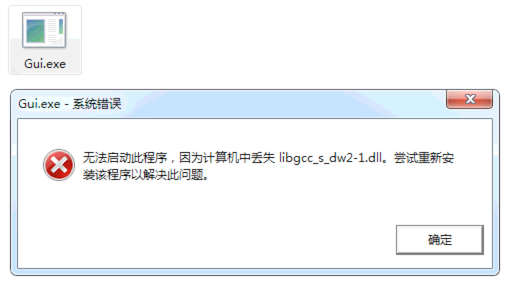
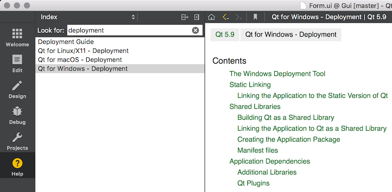

程序在开发工具例如 Qt Creator 中运行没有问题，不少同学开发好后就直接把 xxx.exe 给用户使用，用户双击 xxx.exe 后提示错误，打开程序失败。很是奇怪: 程序在我的电脑里打开好好的，为什么到其他电脑上就不行了呢，是不是他的电脑有问题？不知道此同学有没有在自己电脑上双击过这个程序！
例如双击下面的 Gui.exe，提示找不到 libgcc_s_dw2-1.dll，那是因为 Qt 的程序运行的时候除了需要可执行程序本身外，还需要依赖一些其他的 dll，需要把这些 dll 一起打包给用户才行:

Qt 程序打包一般有 2 种方式，纯手动打包和半自动打包，下面以 Windows 中打包 Qt 程序 Gui.exe 为例进行介绍，环境如下:
- 安装 MinGW 的 Qt 5.9.1 到 F 盘
- DLL 目录: F:\Qt\Qt5.9.1\5.9.1\mingw53_32\bin
- Qt 的插件目录: F:\Qt\Qt5.9.1\5.9.1\mingw53_32\plugins
纯手动打包
双击 Gui.exe
弹出错误对话框，提示缺少 dll 如 libgcc_s_dw2-1.dll
到上面说的 DLL 目录 中复制 libgcc_s_dw2-1.dll 到 Gui.exe 所在目录
重复步骤 1 到 4 直到不在提示缺少 dll
复制需要的插件到 Gui.exe 所在目录:
没有插件时程序能运行起来了(在其他电脑还可能会提示缺少 paltforms 的 dll，但是安装了 Qt 的电脑里不会提示)，先不要开心，如果还使用了数据库，PNG 等，会发现访问不了数据库，PNG 显示有时候会有问题等，但是没有任何错误提示。这是因为程序很多时候还依赖 Qt 的插件，程序运行时缺少插件是不会提示的，这就需要我们凭经验去判断还需要哪些插件(看 pro 文件的 QT 配置了什么模块)
把 Gui.exe 和上面的这些 dll 一起给用户，到此程序打包完成了
半自动打包
借助 Qt 提供的 windeployqt.exe 进行打包:
命令行进入 Gui.exe 所在目录
执行命令
F:\Qt\Qt5.9.1\5.9.1\mingw53_32\bin\windeployqt.exe Gui.exewindeployqt.exe 后的参数是可执行文件的名字
可以看到有很多 dll 和所有需要的 Qt 插件被复制到了 Gui.exe 所在目录
双击 Gui.exe，提示缺少 dll 如 libgcc_s_dw2-1.dll
到上面说的 DLL 目录 中复制 libgcc_s_dw2-1.dll 到 Gui.exe 所在目录
重复步骤 4 到 6直到不在提示缺少 dll
把 Gui.exe 和上面的这些 dll 一起给用户，到此程序打包完成了
半自动打包的方式比纯手动打包的方式方便了很多，能够自动为找到所有需要的 Qt 插件，但也有弊端，会复制一些不一定需要的 dll 和文件，例如 opengl32sw.dll，D3Dcompiler_43.dll，libGLESV2.dll，Qt5Svg.dll，translations，这些文件加起来有 +20M，如果对空间敏感，可以把他们删除，然后运行程序看看有没有问题(绝大多数时候没问题)，如果有问题，则把需要的再放回去即可。
Windows 下 Qt 程序的打包完成了，Mac 和 Linux 下打包请参考 Windows 的方式进行研究，更完善的打包方式请在 Qt 的帮助文档中搜索 deployment，查看相关帮助文档:

程序文件
附上程序打包后的文件列表作为参考:
1 | ├── Gui.exe |
提示: audio, bearer, iconengines, imageformats, mediaservice, platforms, playlistformats 都是 Qt 的插件，他们和 Gui.exe 在同一级目录。如果感觉插件都放在 Gui.exe 的目录太乱，可以把它们放到 plugins 目录中，并在 main 函数中调用
QApplication::addLibraryPath("plugins")即可。
Mac 程序打包
上面介绍的是在 Windows 中打包 Qt 程序，在 Mac 上怎么打包 Qt 程序呢？
- 命令行进入 macdeployqt 所在目录，例如
cd /Users/Biao/Qt5.13.0/5.13.0/clang_64/bin - 执行命令
./macdeployqt /Users/Biao/Temp/xxx.app - 结束了，不需要复制任何其他库文件了，可以直接把 xxx.app 发送给其他人使用了，如果想打包为 dmg 文件的话，在上面的命令后面加上参数
-dmg即可
不过需要注意的是，如果 pro 文件中设置了 CONFIG -= app_bundle，使用 macdeployqt 打包就会报错，这种情况不知道怎么打包了。
工作目录
虽然我们会给 Qt 程序打包了，但是还有一个隐藏在 Mac 程序背后的坑，那就是工作目录。
Qt 程序的默认工作目录有好几种情况:
- Mac:
- 如果设置
CONFIG -= app_bundle，工作目录默认是可执行文件所在目录 (生成 xxx.app 程序) - 没有设置
CONFIG -= app_bundle，工作目录默认是系统根目录 / (生成 xxx 可执行文件)
- 如果设置
- Windows: 工作目录默认就是可执行文件所在目录
- Linux: 抱歉，没在 Linux 下开发过 Qt 程序，大家可以参考上面的信息自己研究一下吧
调用 QCoreApplication::applicationDirPath() 返回的是可执行文件所在的目录，并不是程序的工作目录。运行程序 xxx.app，程序的工作目录默认是相对于系统的根目录 **/**，此时如果访问相对路径的文件 QFile file("data/config.json")，它的绝对路径则为 /data/config.json，可以调用 QDir::setCurrent(dirPath) 来修改程序的工作目录:
1 | QApplication app(argc, argv); |
为了统一起见，设置可执行文件所在目录为工作目录，这样同一套代码，不管是在 Windows 还是 Mac，直接编译就可以使用了。
大家可以参考 Qt 的帮助文件，就知道为什么会这样了:
QDir::currentPath() returns the absolute path of the application’s current directory. The current directory is the last directory set with QDir::setCurrent or, if that was never called, the directory at which this application was started at by the parent process.
运行 xxx.app 后，使用命令
ps -ef可以看到它的 PPID 为 1，所以此时它的工作目录为 / 就可以理解了。QDir::setCurrent(const QString &path) sets the application’s current working directory to path. Returns
trueif the directory was successfully changed; otherwise returnsfalse.